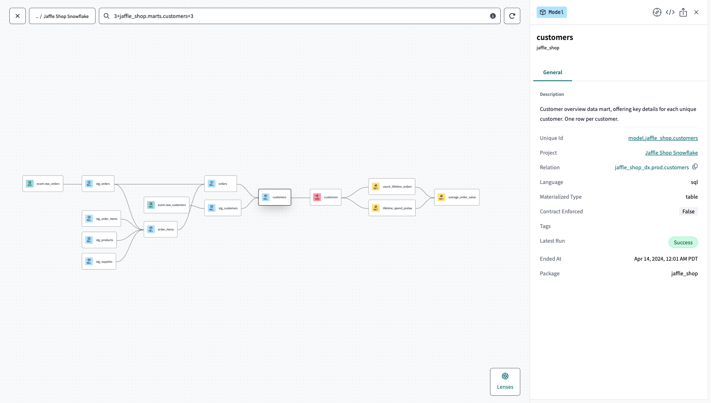

dbt (data build tool) is a transformation framework that lets you write your warehouse transformations as SELECT statements, organized as a directed acyclic graph (DAG) of models, with built-in testing, documentation, and lineage.
You write SQL. dbt handles the rest: dependency resolution, the CREATE TABLE / CREATE VIEW wrapping, running models in the right order, generating docs, running tests, and producing artifacts you can audit.
A dbt “model” is just a .sql file containing a SELECT statement. You don’t write CREATE TABLE or INSERT INTO — dbt does that for you based on the model’s configuration.
-- models/staging/stg__customers.sql
select
id as customer_id,
first_name,
last_name
from {{ ref('raw_customers') }}
The {{ ref('raw_customers') }} is dbt’s way of saying “another model in this project named raw_customers”. dbt resolves it to the right table name at compile time and uses it to build the DAG.
Once you have a few models, dbt knows how every model depends on every other one and can render the full lineage graph for you:

Each node is a model, each arrow is a ref(). dbt walks this graph at run time to build models in the right order — you never write a CREATE TABLE manually, and you never schedule the dependencies yourself.
| Capability | Without dbt | With dbt |
|---|---|---|
| Dependencies | You manage execution order by hand or with Airflow tasks | Inferred automatically from ref() calls; dbt builds the DAG |
| Tests | Hand-written queries scheduled separately | Declare not_null, unique, relationships in YAML; dbt generates and runs them |
| Docs | A wiki page that goes stale | Auto-generated from your YAML and code, including column-level lineage |
| Reuse | Copy-paste SQL between scripts | Macros (Jinja-templated SQL) and packages |
| Environments | Manually point queries at dev / prod schemas |
One profiles.yml with multiple targets |
| Version control | SQL lives in a wiki or in BI-tool definitions | SQL lives in git, gets PRs, gets CI |

| Stage | Tools | Examples |
|---|---|---|
| Sources | Operational systems & data | Salesforce, Stripe, Postgres, Kafka, S3 buckets |
| E + L | Ingestion / loaders | Fivetran, Airbyte, custom Python jobs |
| Warehouse + T | Storage + dbt for transformation | Snowflake / BigQuery / Databricks / DuckDB — dbt is the T layer running inside |
| BI / ML | Downstream consumers | Looker, Tableau, Mode, Hex, Jupyter, ML models |
Notice dbt has only one job. It does not move data into the warehouse and it does not visualize the output. It transforms what’s already in the warehouse.
A dbt project is mostly four kinds of files:
.sql models — the transformations themselves..yml configs — sources, tests, docs, exposures..csv seeds — small static data (lookup tables, country codes) loaded with dbt seed..sql macros — reusable Jinja-templated SQL snippets.That’s the entire surface area. The rest is just running dbt run, dbt test, and dbt build.
Every transformation lives in version control. Every transformation has tests. Every transformation has documentation. Every transformation runs in dependency order. None of this is optional — dbt makes the boring engineering hygiene the default.
One more lesson before we start writing real dbt — press n.